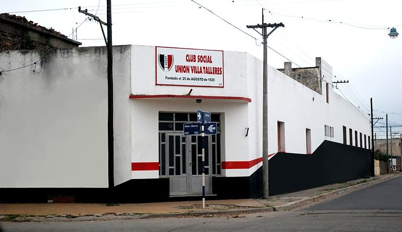

Club Social Unión Villa Talleres
Historia
En 1885, dos ferrocarriles se instalaron en Junín: el Ferrocarril Central Argentino y el Ferrocarril B.A.P., este último radicó en 1886 enormes talleres. Esta circunstancia fue decisiva en la transformación urbanística y demográfica de la ciudad. La población se incrementó alimentada por la inmigración, ello se vio reflejado en el resto de las actividades industriales, comerciales y de servicios. De esta manera, a principios del siglo XX, la ciudad, cruzada por los dos ferrocarriles, casi paralelos, tuvo tres focos que actuaron casi como áreas independientes: el Junín fundacional o área del Fuerte; el Pueblo Nuevo y Villa Belgrano, tras las vías, que concentró el núcleo habitacional de los obreros de los talleres. Debido al permanente aumento de la población por causas migratorias y vege-tativas, el crecimiento urbano fue más allá de los límites del barrio Belgrano, hacia el noreste. Surgieron entonces y se individua-lizaron otros barrios, donde el loteo urbano fue el elemento que amplió la cuadrícula central. El barrio “Villa Talleres”, con origen en loteos no precisados entre 1904 y 1917, se extendió en cuadrícula hacia el noreste del barrio Belgrano, del que se halla separado por la calle Primera Junta y linda con los terrenos adquiridos para almacenes y ampliaciones futuras de los talleres del ferrocarril BAP, al noreste con la calle Tucumán y su extremo norte es la avenida República. Estuvo poblado por ferroviarios, obreros de los talleres, de donde tomó su denominación. Poseía en sus inicios una densidad de edificación baja, con numerosos baldíos, e incluso quintas. Sus calles, angostas y cortadas en ángulo brusco, recibieron denominación por ordenanza en el año 1917.
Noticias
Galería
Actividades
| Actividad | Día y Hora | Profesor/a |
|---|---|---|
| Costura | Lunes - 18 hs | Norma Aguirre |
| Tejido | Martes - 18 hs | Norma Aguirre |
| Reciclaje | Jueves - 18 hs | Agustina Arias |
| Pintura | Viernes - 18 hs | Andrea Lobosco |
Contacto
Dirección: Jean Jaures y Laprida, Junín, Buenos Aires
Alquiler del lugar: 2364502106 - Alfredo Martínez
Inscripción a actividades: 2364365961 - Norma Aguirre